Carrot Cake with Pumpkin Spiced Frosting

~ raw, vegan, gluten-free ~
If you are in need of a quick cake that doesn’t require baking or dehydrating… this could be what you are looking for. The frosting does require some lead time for chilling so it can thicken, but the cake itself goes together lickety-split.
I do use raw sprouted buckwheat flour, but if you don’t have time to make that, you can try using nuts ground down to a flour. You could use almonds but even those should be soaked and dehydrated for digestive purposes first. I guess the bottom line here is to have a pantry stocked with staples so you can be creative and enjoy your dishes more quickly.
My dad was here visiting when I made this cake, and it was all I could do to keep him out of the frosting. He was like a darn kid. I made this cake to sell down at the local cafe, and after I had delivered it, my dad was in line, handing money to the gal behind the counter, to purchase a piece. haha
The cake is moist and perfectly balanced in the sweet department. As one of the flours, I used coconut flour… please don’t use store-bought. It is far too drying, and it will suck up all the moisture from the cake. Follow the links below on how to make the flours, and you will be pleased with the outcome.
And while we are the subject of ingredients, let’s talk carrots. Seems simple enough, a carrot is a carrot, right? When it comes to using fresh, whole foods in raw recipes you want to make sure that you use the best tasting carrots as possible, it is the star of the recipe right? So before you grate and throw them into the mixing bowl, taste test first. If they are tasteless, don’t use them… Enjoy!
Ingredients: yields 8” cake
Cake:
- 1 cup dried apricots
- 1 cup Medjool dates, pitted
- 1 1/2 cups raw buckwheat flour
- 1 cup raw coconut flour (not store-bought)
- 1 tsp ground Ceylon cinnamon
- 1/4 tsp apple spice
- 1/4 tsp Himalayan pink salt
- 2 1/2 cups grated carrots, (3 large carrots)
- 1 medium apple
- 2 tsp lemon juice
- 1 tsp vanilla extract
- 2 Tbsp maple syrup
- 1/2 cup raisins
Frosting:
Decoration:
Preparation:
Frosting:
- Click on the link above for the White Cake Frosting and make it first. Add 2 tsp of pumpkin spice to the frosting. Taste test to see if you want more. I didn’t want the frosting to compete with all the wonderful flavors of the cake, so I made this spice just a hints worth. It is best to make the frosting 4-8 hours in advance so it can firm up. The frosting is very liquidy right after blending it together.
Cake:
- Rehydrate the apricots and dates by placing them in a bowl and add enough warm water to cover them.
- Allow them to sit for at least 15 minutes or longer.
- Once ready to add to the recipe, drain the soak water (discard or use in your next smoothie) and hand-squeeze the excess water from them.
- In a large mixing bowl combine the buckwheat flour, coconut flour, cinnamon, apple spice, and salt. Mix until well combined.
- If you have a high-powered food processor, add the rough chop carrots and apple first, then add to the food processor fitted with the “S” blade. Otherwise, I recommend shredding the carrots and apple first before placing in the processor with the “S” blade.
- Add the dates, apricots, lemon juice, vanilla, and maple syrup. Process until well mixed.
- It is good to leave some texture in the batter but not large, hard pieces. Add to mixing bowl.
- Add raisins and pulse together. Don’t over-process.
- If you have two of the same Springform pans, divide the batter into two halves.
- Press the batter into the bottom of each pan, smoothing out the surface.
- If you just have one Springform pan, press the batter into the pan, release and remove the outer ring. With a large, straight-edged knife, cut the cake in half horizontally. If the batter feels too soft, place in the freezer to firm up first.
Assembly:
- Place the bottom layer of cake on the serving dish that you will want to present it in.
- Spread a layer of frosting on the top of the cake. Try to make it as even as possible so that the cake will sit evenly.
- Add the second cake layer on top of the frosting.
- Frost the entire cake starting with the sides first, then the top.
- If at any time the frosting starts to get too soft before you are finished, place the cake in the freezer for about 30 minutes and the frosting back in the fridge. All this depends on the ambient air temperature.
- Press the crushed walnuts onto the side of the cake. Brush away the excess nuts that don’t stick.
- If you wish to pipe a frosting border on the cake, load a piping bag with frosting.
- Be sure to work all air bubbles out of the bag before piping. Air bubbles will disturb a fluid flow of frosting.
- Use any piping tip that you wish.
- Create a border around the top edge.
- Sprinkle crushed nuts in the center of the cake.
- Keep the cake chilled in the fridge until serving. An 8” cake will serve 12 people.
- This cake should last about 3-4 days in the fridge. It will freeze well for several months if well sealed.
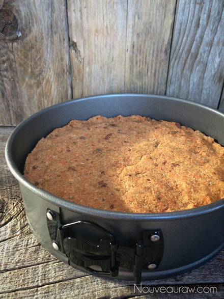
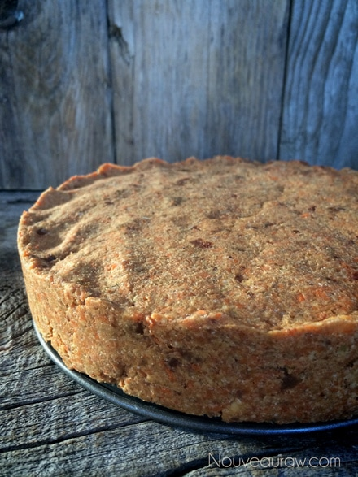
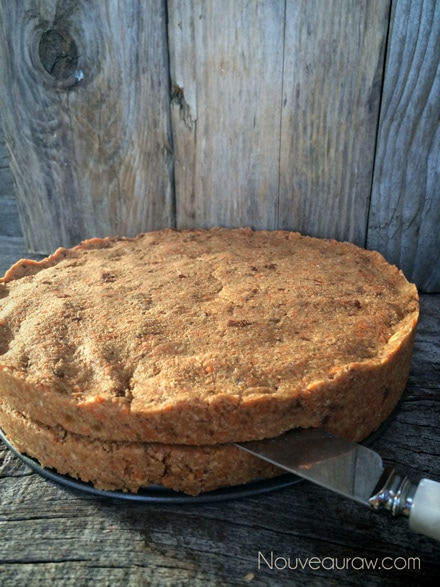
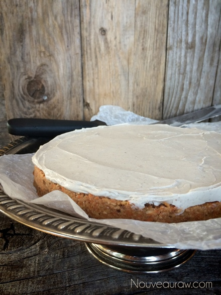
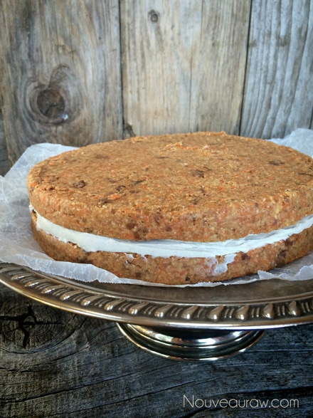
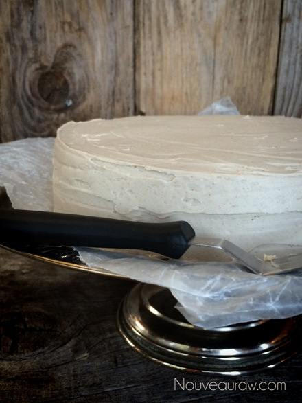
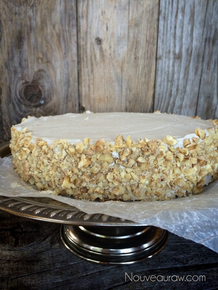
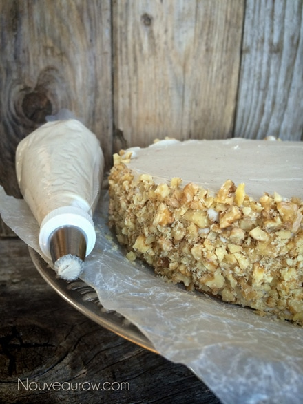
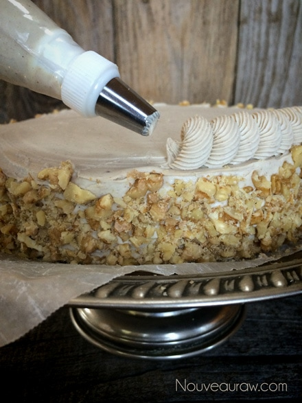
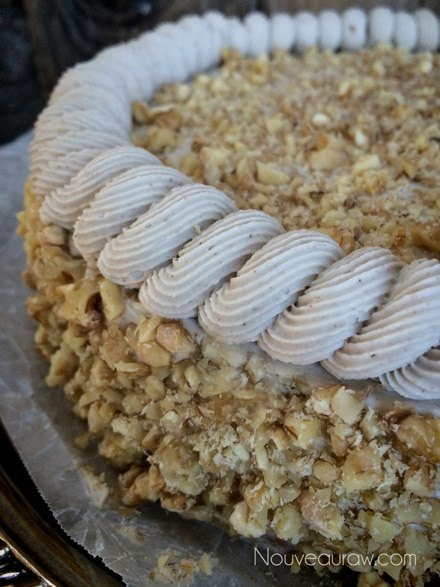
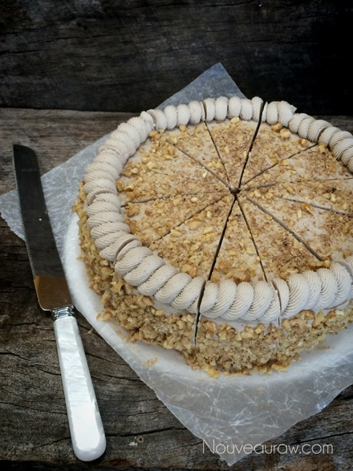
© AmieSue.com